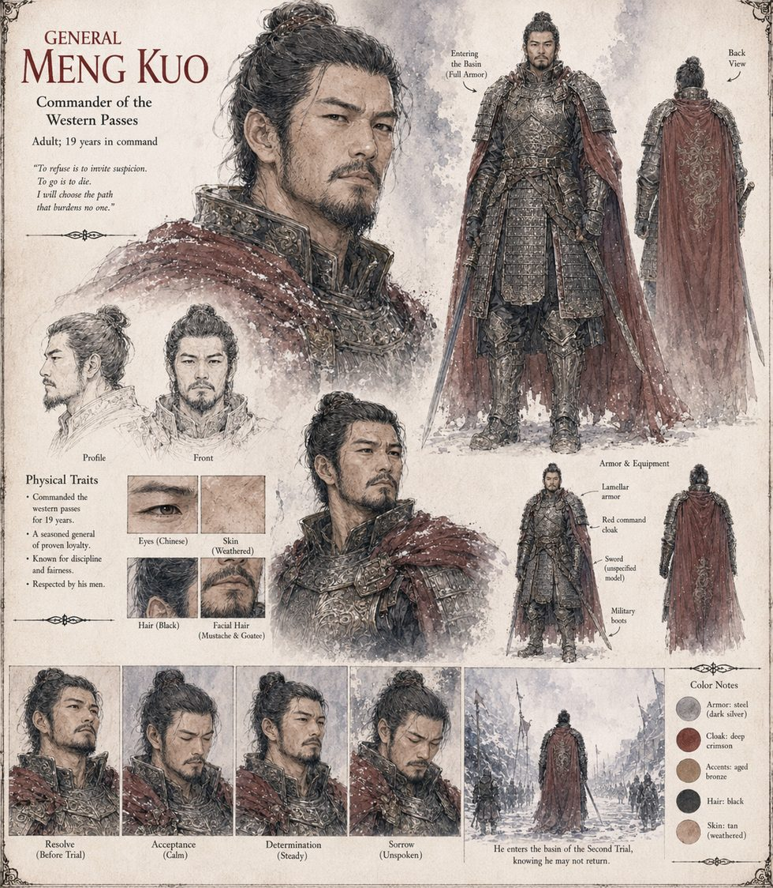

Meng Kuo
General · Commander of the Western Passes · nineteen years in command
Commanded the western passes for nineteen years, and in private correspondence the Ministry of Rites intercepted and wished it had not, called the old Emperor “the old man in the Jade Hall.” He arrives at the basin already understanding the true purpose of the summons, and steps in anyway, in full lamellar armor, because he has run the numbers on refusing — public disgrace, stripped rank, a slow provincial death against a fast public one — and a man who has spent his career ordering soldiers into worse odds cannot, in front of them, be seen to flinch from his own.
The current takes him within the space of eleven breaths. The court, still fresh from the Chief Alchemist's death and unwilling to abandon a doctrine it has only just finished re-consecrating, tells itself a soldier's test is simply blunter and more physical than a scholar's, and that the water is working through the court by kind. He goes first of the war council's own dead.
“To refuse is to invite suspicion. To go is to die. I will choose the path that burdens no one.”
Appears in The Heavenly Thunder-Serpent